1. Introduction
OctoPus (Octave + Jianpu) is a desktop editor for numbered music notation. Write a score as JPS (Jianpu Script) text, review a live SVG score, compare it with an original image or PDF, and export finished pages. A .jps file describes musical content; page settings control its presentation. This guide describes version 0.1.0, updated 2 October 2026.
The program works locally for editing, rendering and supported transcription once installed. Help links and update checks need a browser or network connection. This manual works offline; its English and Chinese versions share the same topics and examples. Use the language tabs, or download the matching PDF.
2. Capabilities, limits and roadmap
| Available now | Scope |
|---|---|
| JPS editing | New/open/save, undo/redo, clipboard, find/replace, source formatting and bundled samples. |
| Live SVG preview | Source/score correspondence, page navigation, zoom and page layout controls. |
| Reference transcription | PNG/JPG/JPEG/PDF input, original display and provisional JPS drafts for review. |
| Export | SVG, PDF and JPEG; locally packaged worker and bundled font substitutions. |
| Languages | English/Chinese interface and user manual. |
Current limits. Transcription is not guaranteed to recover a complete score. Check notes, accidentals, octave dots, durations, lyrics, slurs, grace notes, endings and page order. General running-header/footer/page-number filtering is still incomplete. Complex layout and cross-page spans need manual review. There is no desktop playback/MIDI workflow, LilyPond exporter or MusicXML import/export UI. Staff-notation recognition is planned, not a supported replacement for Jianpu input. Automatic update installation is not provided. Native macOS packaging is deferred; Windows/macOS host acceptance is separate from Linux testing.
- Planned: improve transcription quality, including difficult marks and repeated page furniture.
- Planned: LilyPond source export and MusicXML export/import.
- Planned: import and recognize staff-notation sheet music as JPS.
- Plans indicate intended direction, not a release date or a current capability.
3. Your first score
- Start OctoPus and choose New. Enter a title, choose the basic score fields and confirm.
- Replace the source with the example below, or open a comparable score from Samples Library.
- Wait for the SVG preview to finish rendering. Click a note to locate its source; edit the text and review the result.
- Use Page Settings for margins/fonts, Save As for a .jps file, then Export for the finished score.
V: 1.0
B: First score
Z: Practice example
D: C
P: 4/4
J: 90
Q: 1 2 3 4 | 5 6 7 1' ||
C: 春 风 吹 来 花 儿 开 了This example has two four-note bars; the final note is one octave above the base register. The eight Chinese lyric characters map to the eight notes.
Learn from a library score
Choose Samples Library, find Farewell, and open a working copy. Read its header, then locate the row beginning Q: 5 (3/ 5/). Put the source cursor on 1'. and inspect the dotted high note in the preview. Change only the dot, compare the result, and Undo. Next move an @ in a copied lyric row and see which note loses its syllable. Save As before keeping experiments. The downloadable excerpts below include the original header, even where only body lines are displayed.
A melody with two lyric verses
Open Farewell in Samples Library. This excerpt is its second sung row. Compare the four barlines, the dotted high 1, the lower 7, and the two lyric lines. Download the excerpt to try the same passage without the rest of the score.
Samples Library: Farewell.jps · source lines 17-19. Excerpt rendered with Free Fallback fonts; blank page space omitted. Download this JPS excerpt
JPS source
Q: 5 (3/ 5/) 1'. 7/ | 6 1' 5 - | 5 (2/ 3/) 4. 7,/ | 1 - - - |
C: 晚风@拂柳笛声残，夕阳@山外山。
C: 问君@此去几时还，来时@莫徘徊。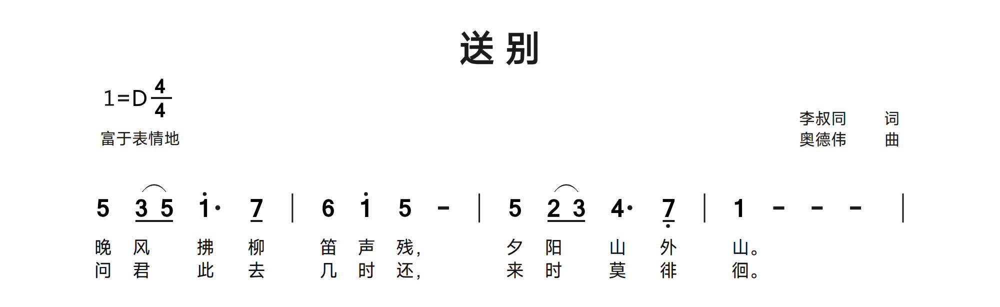
4. The workspace and UI
The top row provides New, Open, Save, Save As, Export, Close, Help, Import PNG/JPG/PDF, Samples Library, Page Settings, Preferences and Exit. The logo icon and text open the project home. The second row selects Mode/Layout and focuses a pane; drag the borders between panels to resize them.
| Pane | Purpose |
|---|---|
| JPS source | Edit text. Filename and Unsaved status sit immediately before the right-aligned Format Source button. Editing actions follow the JPS source heading. |
| SVG preview | Rendered score, fit/zoom/page controls and render diagnostics. |
| Original Image/PDF | Reference page, fit/zoom/rotate controls and Transcribe menu; visible in Transcription mode. |
On a narrow pane, view controls become a View menu and source tools become Edit. SVG View includes Fit Page, Fit Width, Prev Page and Next Page; Original View includes fit and rotation plus PDF page navigation when applicable. Very narrow panes also expose zoom through View. This keeps actions on one heading row.
5. Files, saving and recovery
Open loads a .jps score. Both plain JPS text and compatible JSON-wrapped JPS documents are supported. The wrapper may contain source, page settings and existing metadata. Save writes the current document; a new document first needs a destination. Save As changes the destination. Changing page settings for plain text may require a wrapper to preserve them; heed the dialog notice.
Close closes the score; Exit closes the application. If changes are unsaved, choose Save, Discard or Cancel. Recovery can restore the last recoverable draft and managed references after interruption; it does not replace ordinary saved backups. Reference images/PDFs are separate from score source: retain their original files. Opening a sample creates a working document; choose your own save location before overwriting anything.
6. Editing JPS source
Use Undo/Redo, Cut/Copy/Paste, Find, Replace and Select All from the heading or compact Edit menu. Find opens the search UI; Replace exposes replacement controls. Standard editor keyboard shortcuts remain available. Clipboard availability depends on the operating system. Format Source spaces musical tokens while retaining notation content; it cannot repair musical mistakes or validate a transcription. Quoted annotations and attached grace groups need careful review after edits.
Manually selecting JPS text shows a blue selection, which becomes muted when the editor loses focus. Clicking a preview note marks its corresponding source note in green.
Prefer ASCII punctuation for syntax: colon :, quote ", comma , apostrophe ' and slash /. Use full-line # comments to explain the source. Do not paste curly quotes or a full-width colon as syntax. Keep attached modifiers next to their note. Preserve a copy before a large replacement and use Undo when needed.
7. Preview, cursor and navigation
The preview updates as source changes. Clicking or moving the source cursor highlights the matching score position and brings that row toward the preview center. Clicking a preview note or lyric selects its source without automatically moving the preview. Direct source clicks/keyboard movement resume following. Only uniquely mapped elements are selectable; some decorative or temporary-voice elements may not have a precise source target.
Use -/+ to zoom, Fit Page for the whole page and Fit Width for width-based reading. Page arrows or View menu items navigate rendered pages. Refresh requests a new render. Click diagnostics below the preview to jump to the related source. A previous preview can remain visible during rendering; wait for completion and resolve relevant warnings before exporting.
8. Original images/PDFs and transcription
Choose Import PNG/JPG/PDF or drop one PNG, JPG/JPEG or PDF into Original Image/PDF. An existing reference prompts Replace Reference or Cancel. Import is blocked while another import, replacement decision, recovery, save, transcription or conflicting dialog is active. Unsupported/multiple dropped files are rejected without import.
Drag the displayed original to pan; use fit, zoom and Rotate 90°. Rotation changes the viewing orientation, not the original file. A PDF has page navigation. The pane close control returns to Normal mode; the managed reference is retained. Input limits include 100 MiB per image/PDF, at most 200 PDF/reference pages and 40 million pixels per decoded image/PDF page. Damaged, encrypted or unsupported files may fail; reduce the input if the program reports a size or page-limit error.
- Transcribe New: generates a provisional new score. Handle any unsaved-score prompt before replacing the working score.
- Transcribe Append: adds recognized music to the current source, using a page break boundary when needed and omitting repeated draft headers for a nonempty score. Undo can reverse the insertion.
- A PDF is transcribed as a document, not only its displayed page. Review the warnings and each page against the original; collapse warnings when you need editing space.
- Correct uncertain recognition manually. Check octave dots, beams, dotted durations, accidentals, grace notes, slurs, endings and lyrics before saving/exporting.
9. Modes, layouts and focus
| Mode/layout | Use |
|---|---|
| Normal N1 | JPS source and preview side by side. |
| Normal N2 | JPS source and preview stacked. |
| Transcription T1 | Original, source and preview in three columns. |
| Transcription T2 | Original and preview above the source editor. |
Drag the divider between panels to resize them. Vertical dividers move left/right; horizontal dividers move up/down. In T1, each divider resizes only its two neighboring panes. Each layout remembers its sizes. To resize with a keyboard, focus a divider with Tab and use the matching arrow keys (Shift for a larger step); Home/End select the smallest/largest size. Minimum sizes keep every panel accessible. Focus Original, Focus Editor or Focus Preview temporarily expands one pane; Exit Focus restores the layout. Controls adapt as the available width changes. F11 toggles the window maximized state; the toolbar has no separate Maximize button.
10. Page settings and fonts
Page Settings groups paper (A4/A5), margins and body offset; title/lyric fonts and note style; title/subtitle/lyric sizes; music-to-lyric, lyric-to-lyric, lyric-to-music and voice spacing; and slur shape (Automatic, Arc, Flat top). Sizes/margins are renderer units, not millimeters. Apply updates the score while keeping the dialog open; OK applies and closes; Cancel discards unapplied draft changes. Already applied changes are not reverted by Cancel. Save the score to retain changes.
| Role | Windows/Linux preference | macOS preference | Bundled fallback |
|---|---|---|---|
| HeiTi-1 (default) | Microsoft YaHei | PingFang SC | MiSans Regular |
| HeiTi-2 | SimHei | Heiti SC | LXGW Neo XiHei |
| SongTi | SimSun | Songti SC | SimZhiSong |
| KaiTi | KaiTi | Kaiti SC | LXGW WenKai Regular |
| FangSong | FangSong | STFangsong | Zhuque Fangsong Regular |
Open Preferences in the top bar to select English or Chinese and choose the font source for each role. Select OS Preference to use the matching installed family or Free Fallback to use the bundled replacement even when the OS font is installed. Unavailable OS choices are greyed out and the bundled fallback is selected automatically. Choices are saved on this computer, apply to SVG preview and SVG/PDF/JPG exports, and do not change the saved JPS. Each installed family is preferred by default, including in production portable builds. Linux needs an exact fontconfig match. Missing families use bundled substitutions. Bundled text with missing characters tries Noto Sans SC, then Noto Serif SC for coverage; neither guarantees every Unicode character. Latin Arial requests use Liberation Sans (Regular/Italic/Bold/Bold Italic). Note styles are Regular, Italic and Bold. Saved HeiTi maps to HeiTi-2. Font substitutions can change spacing. Microsoft fonts are not redistributed. MiSans has its own Xiaomi license; other bundled notices include OFL and IPA licenses.
11. Export and portable use
Choose Export and select SVG, PDF, JPG (96 DPI) or JPG (300 DPI), then choose the output destination. PDF produces one multipage document; SVG/JPG produce page files. 300 DPI is useful for print-quality raster output. The disabled LilyPond item is a planned feature. Save the JPS as the editable master before sharing rendered files. PDF embeds fonts, JPEG stores pixels and SVG preserves vector content, but external SVG viewers need matching text fonts. Inspect the result in its destination viewer. The separate Python ReportLab PDF path cannot embed CFF-outline system fonts and uses the role fallback there; this is not a blanket limitation of native desktop export.
Keep the entire portable folder together, including engine, examples and docs. On Linux run dist/x86_64-unknown-linux-gnu/portable/usr/bin/octopus; Windows uses portable/octopus.exe. The worker is bundled, so no separate Python is required. Linux still requires GTK/WebKit runtime libraries and Poppler; Windows requires WebView2. Portable does not mean every host dependency is embedded.
12. Keyboard and Help
| Shortcut | Action |
|---|---|
| Ctrl/Cmd+N | New score |
| Ctrl/Cmd+O | Open score |
| Ctrl/Cmd+S / Shift+S | Save / Save As |
| Ctrl/Cmd+Z | Undo |
| Ctrl/Cmd+Y or Shift+Z | Redo |
| Ctrl/Cmd+E | Insert the editor’s last inserted content when available |
| Ctrl/Cmd+X / C / V / A | Cut / Copy / Paste / Select All in the editor |
| Ctrl/Cmd+F | Editor search |
| F11 | Toggle window maximization |
| Arrow / Home / End / Escape | Navigate menus; Escape dismisses. Language tabs also support arrow/Home/End. |
Some shortcuts are inactive while a modal dialog is open or a form control has focus. Help offers User Manual, Report Issues, Submit Requests, Check for Update and About OctoPus. Issues open the project issue page; Requests opens the pull-request page. Check for Update compares the latest stable GitHub release and reports unavailable information, unfamiliar tags or network errors separately; it does not install updates. About and the logo link to the project home.
13. JPS structure and conventions
JPS is ordinary text, normally stored with extension .jps. A score has a descriptive header followed by music Q: and lyrics C:. One Q line represents a printed music row; following C lines belong to that row. Numbered prefixes identify voices. Blank lines improve source readability. A whole line beginning with # is a comment; inside a Q line, # is an accidental, not a comment.
The original specification calls V, B, D and P required fields. Include them for a complete portable score even though OctoPus tolerates incomplete drafts. Use uppercase header/prefix letters and lowercase literal [fenye]. Preserve the header/body distinction; repeated B/Z fields serve specific layout purposes. Unknown syntax may be preserved with diagnostics rather than rendered as intended.
Read a score in three passes
First read the header for title, key, meter and tempo. Then read only Q rows: digits and rests are musical events, suffixes modify their host, and barlines divide the flow. Finally read C rows and count lyric slots against the notes. The source order is also layout order: moving an entire Q row changes where music appears; moving its C row away may attach the words to a different row. Start the body with music, not unattached lyrics.
Plain JPS versus a saved document wrapper
A library .jps can be a JSON document whose code field contains the JPS and whose page_config field stores layout settings. Edit the code in JPS source, not the JSON punctuation. Downloadable manual excerpts are plain UTF-8 JPS for copying and opening. They carry musical headers and body text; to reproduce the pictured spacing exactly, open the named library sample so its page settings are restored.
14. Descriptive header
| Field | Example value | Meaning |
|---|---|---|
| V | 1.0 | Script version / 脚本版本 |
| B | Practice | Title; repeats become subtitles / 标题，重复成为副标题 |
| Z | Name - composer | Author/credit; multiple right-aligned lines / 作者，可多行右对齐 |
| D | E$ | Key; A-G with # sharp or $ flat / 调号，A-G 加 # 或 $ |
| P | 4/4 | Meter; alternatives may follow / 拍号，可附其他拍号 |
| J | 90 | Tempo number and/or descriptive text / 速度数值及/或文字 |
| X | 10 | Score sequence number / 乐谱序号 |
V: 1.0
B: Main title
B: Subtitle
Z: Writer - lyrics
Z: Composer - music
D: F#
P: 4/4 (2/4 1/4)
J: 90 Allegro
X: 10Use a capital A-G key letter: C, F#, E$. Multiple B lines put subtitle text under the first title; multiple Z lines place credits at the upper right. P uses slash-separated numerator/denominator; spaces and parentheses can describe auxiliary meters. J may be numeric beats per minute, words, or both. X is metadata, not a voice number. Header values describe the score; a tempo field does not enable playback.
Required fields and repeated fields
For a complete score include V, B, D and P. V: 1.0 declares the syntax version; it is not the OctoPus application version. The first B is the centered main title and later B lines are centered subtitles. Each Z creates a separate right-aligned credit line. Optional J describes speed, and X can carry a catalog number. Keep these lines above the first Q. Empty or incomplete drafts may render, but do not rely on that as a portable document format.
Key, meter, tempo and comments
D: F# and D: E$ mean sharp and flat keys; use capital A-G and ASCII #/$, not full-width punctuation. P: 6/8 describes the meter; P: 4/4 (2/4 1/4) also lists auxiliary meters. It does not replace local barline meter changes. J: 90 uses a numeric tempo, J: Allegro uses text, and both can coexist. A full line starting # is ignored as a source comment, whereas 4# inside Q is a sharp note. Quoted annotations are printed; source comments are not.
Header placement and a multilingual title
The second B is a subtitle; the three Z lines are separate credits. D: E$ displays the flat key. P sets 4/4 and J supplies a numeric tempo. The title punctuation is text, not a musical barline.
Samples Library: O-Canada.jps · source lines 13-15. Excerpt rendered with Free Fallback fonts; blank page space omitted. Download this JPS excerpt
JPS source
V: 1.0
B: O Canada | Ô Canada
B: --- Canada National Anthem
D: E$
P: 4/4
J: 93
Z: Sir Adolphe-Basile Routhier 词
Z: Calixa Lavallee 曲
Z: Robert Stanley Weir 英译
Q: 3 - 5. 5/ | 1 - - 2 | 3 4 5 6 | 2 - - 0 |
C: O /Can- /a- /da~! Our/ home / and /na-tive/ land~!
C: Ô Can- /a- /da~! Ter- /re /de /nos /ai- /eus~,

15. Notes, register and duration
| Syntax | Meaning |
|---|---|
| 1-7 | Scale degrees / 简谱音级 |
| 0 | Rest / 休止符 |
| 8 | Invisible rest with layout space / 占位隐藏休止符 |
| 9 | Rhythm X note / 节奏 X 音符 |
| 1' / 1'' | One/two octaves above / 高一/两个八度 |
| 1, / 1,, | One/two octaves below / 低一/两个八度 |
| 1 - - | Quarter note plus two extension beats / 音符加两拍增时线 |
| 1/ / 1// / 1/// | Eighth / sixteenth / thirty-second / 八分、十六分、三十二分 |
| 1. / 1.. | Single/double dot / 单附点、双附点 |
A bare digit is the basic quarter-note unit in the compatibility notation. Each attached slash halves its duration. A dot adds half the undotted duration; two dots add half plus a quarter (1.75 times the original). Extension hyphens add the Jianpu continuation strokes. They do not each need a lyric skip. Add octave commas/apostrophes after the digit; avoid spaces between the note and its suffix.
Q: 1 2' 3,, 0 | 1/ 2/ 3// 4// 5/ 6 7 | 6. 7/ 1' - ||Scale degree, rest, hidden rest and rhythm X
1-7 name scale degrees relative to D; they are not absolute MIDI pitches. 0 is a printed rest. 8 is an invisible rest/blank slot used to reserve layout space, especially between voices; it is not the next scale degree. 9 draws a rhythm X rather than pitch 9. Continuation - strokes extend a sounding note; they are not additional sung attacks. A hidden 8 is still a source event: when lyrics drift, compare its placement and any @ markers rather than simply deleting every invisible slot.
Calculate duration before editing layout
The basic digit is a quarter-note unit. Relative values are: no slash = 1, / = 1/2, // = 1/4, /// = 1/8. A single dot multiplies the value by 1.5 and a double dot by 1.75. Thus 5/. is 3/4 of a quarter-note unit and 5//. is 3/8; 5.. is 1.75. Each separate continuation dash adds a continuation beat in ordinary Jianpu writing. In 4/4, four bare notes fill an ordinary bar; in 6/8, six eighth notes do. Beam joins, lyric joins and extra spaces do not fix an incorrect duration total.
Keep suffixes attached to their host
Use apostrophes for high register and commas for low register; repeat them for two or more octaves. A note such as 7,/# carries low register, an eighth-note slash and a sharp. Library scores use several compatible suffix orders, so start from a working example instead of splitting a compound token into disconnected text. A period inside music is a duration dot; punctuation inside C is lyric punctuation. Do not replace the ASCII apostrophe with a typographic quote.
Duration, register and a hidden rest
Read 3/ and 5/ as eighth notes, 1'. as a dotted high note, and 7,/ as a low eighth note. The final 0 is visible; 8 reserves space but prints no rest digit. &zkh / &ykh delimit the accompaniment visually.
Samples Library: Farewell.jps · source lines 10-10. Excerpt rendered with Free Fallback fonts; blank page space omitted. Download this JPS excerpt
JPS source
Q: 5&zkh 3/ 5/ 1'. 7/ | 6 1' 5 - | 5 2/ 3/ 4. 7,/ | 1 - - 0 8&ykh |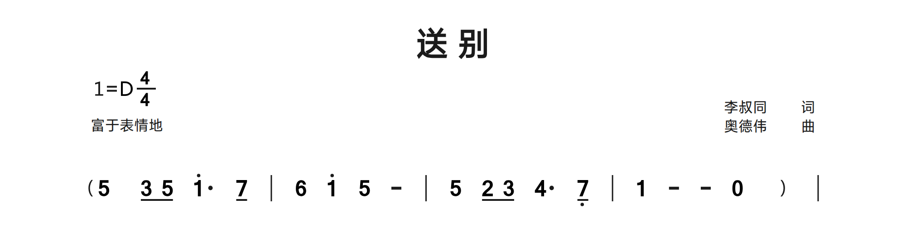
Thirty-second notes and continuation strokes
Three slashes produce three shortening lines. Compare the opening 0 rests, the low commas and high apostrophes, the short-note run, and 2 - at the end. The final (y...) is a tuplet, explained later.
Samples Library: Flower-In-Water.jps · source lines 10-10. Excerpt rendered with Free Fallback fonts; blank page space omitted. Download this JPS excerpt
JPS source
Q: 0&zkh 0 6/// 1'/// 5/// 6/// 3/// 5/// 2/// 3/// 1/// 2/// 6,/// 1/// 5,/// 6,/// 2,/// 3,/// | 1/ 5,/ 6,/ 7,/ 5,/ 6,/ 5,/ | 2 - (y3 5 6&ykh) |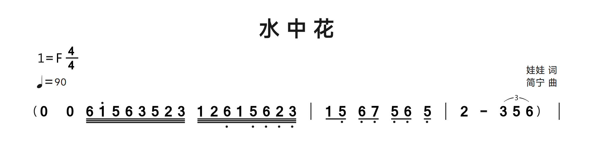
16. Automatic and custom grouping
OctoPus automatically groups short notes by a dotted-quarter beat in compound eighth-note meters: 6/8 uses two groups of three eighth notes, 9/8 uses three, and 12/8 uses four. The same rule applies when the denominator is 8 and the numerator is greater than 3 and divisible by 3. Other meters, including 3/8 and 2/2, retain quarter-note grouping. The note durations themselves do not change.
P: 6/8
Q: 1/ 2/ 3/ 4/ 5/ 6/ |Where ~ and ^ act
The example above forms two three-eighth groups without extra marks. Use ~ and ^ only when you want to override the automatic grouping: attach ~ to join the marked note to the following note, or ^ to end the group after the marked note. For example, 1/~2/^3/~4/^5/~6/ explicitly groups six eighth notes in pairs. These controls change the visual underlines, not pitches or durations. Inspect both underline levels in a sixteenth-note run. In lyrics, ~ instead joins text into one lyric slot. Neither music ~ nor ^ adds a note.
Join and split beams in compound meter
The header lists 6/8 and 9/8; the first meter sets the initial dotted-quarter grouping. Explicit marks can customize it: in the first row, 6/^ ends the group after that note, while 5/~ 4/~ 1/ joins a group. The second row uses ~ to join longer runs. These marks change beam grouping, not note lengths.
Samples Library: Autumn-Cicada - Fei-Yuqing.jps · source lines 11-12. Excerpt rendered with Free Fallback fonts; blank page space omitted. Download this JPS excerpt
JPS source
Q: 6/&sby&zkh | 5 6/^ 5/~ 4/~ 1/ | (3'. 3') 3'/ | 2 3/ 2 1/ | (7,. 7,.) |
Q: 5,//~ 6,//~ 7,//~ 1//~ 2//~ 3// 1//~ 2//~ 3//~ 4//~ 5//~ 6// | 4//~ 5//~ 6//~ 7//~ 1'//~ 2'// 7//~ 6//~ 5//~ 6//~ 4//~ 2// | (1. 1.) 8&ykh |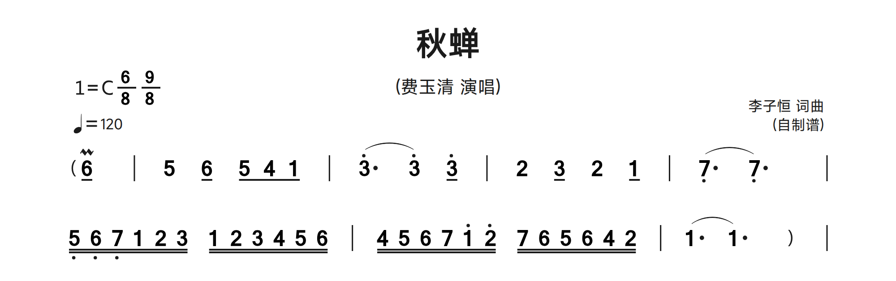
17. Accidentals and grace notes
Write sharp #, flat $ or natural = after the host digit, for example 4#, 7$, 3=. Grace notes are attached square-bracket groups after their host: 1[23] displays preceding grace notes; 1[h23] displays following grace notes. Inside a group, commas/apostrophes, slashes and accidentals still apply. Grace digits default to eighth notes; a slash makes a sixteenth. A bracket attached to a note is not an ending bracket on a barline.
Q: 4# 7$ 3= 1[2/3'] | 5[h6,7/] - ||Accidental placement and scope
Write the accidental on its host digit, such as 4#, 7$ or 3=. Its printed position is before the digit. D changes the header key; a note accidental changes a particular written note. When copying a passage into a different key context, inspect its later repeated notes and explicit naturals. OctoPus prints the notation supplied; it does not validate the intended harmonic spelling or infer every missing cancellation.
Grace notes are smaller attached groups
1[23] means a preceding group attached to main note 1; 1[h23] means a following group. The h goes just inside [, not after the closing bracket. The group may contain several notes, register marks, accidentals and shortening slashes. Inside a grace group a bare digit already has the short eighth-note form; / makes it sixteenth. The host still has its own duration and lyric. Do not count each grace digit as a separate main lyric slot, and do not move the brackets to a barline, where they become ending syntax.
Flat/sharp followed by a natural
In Q2, 3$ is followed by 3=; in Q4, 4# is followed by 4=. The modifier is typed after the digit but drawn before it. Hidden 8 slots keep the choir parts aligned. These two selected voices are rendered independently of the omitted parts.
Samples Library: Edelweiss - Choir ChinEng.jps · source lines 23-23, 27-27. Excerpt rendered with Free Fallback fonts; blank page space omitted. Download this JPS excerpt
JPS source
Q2: 3 - 8 3 | 5 - - | 5 - 8 5 | 4 - - | 3 - 5 | 4 8 3$ 8 2 | 3= - - | 1' - - |
Q4: 1 - 8 1 | 7, - - | 3 - 8 3 | 4 - - | 3 - 5 | 5 8 4# 8 4= | 3 - - | 1' - - |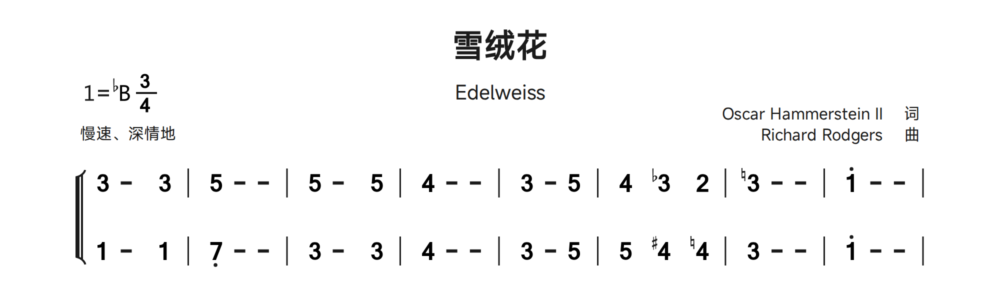
Before/after grace notes and register
The first four hosts compare before/after grace notes and their shorter values. The next bars compare low and high grace notes. [h...] follows the host visually; [...] precedes it. All groups are typed after the main note.
Samples Library: Symbols.jps · source lines 8-8. Excerpt rendered with Free Fallback fonts; blank page space omitted. Download this JPS excerpt
JPS source
Q: 1[1/] 1[1] 1[h1] 1[h1/] | 1[1,/] 1[1,] 1[h1,,] 1[h1,,/] | 1[1'/] 1[1''] 1[h1'] 1[h1''/] |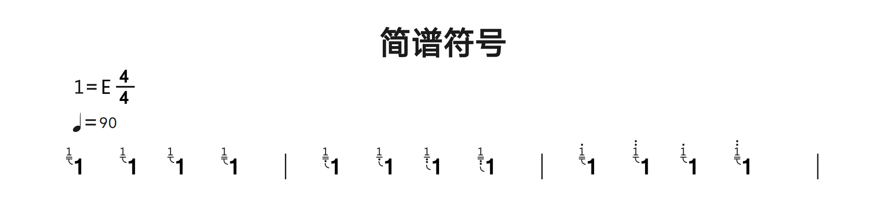
Grace groups containing several notes
The left bar contains preceding grace groups; the right bar repeats the pattern as following grace groups with h. Slashes within a group shorten the grace notes independently of the host.
Samples Library: Symbols.jps · source lines 15-15. Excerpt rendered with Free Fallback fonts; blank page space omitted. Download this JPS excerpt
JPS source
Q: 1'/[23] 7/[23/4] 2,/[3/4/] 3,/[45/] 4[5/6] 5'/[1/2/3/] 6/[5/67/] | 1'/[h23] 7/[h23/4] 2,/[h3/4/] 3,/[h45/] 4[h5/6] 5'/[h1/2/3/] 6/[h5/67/] |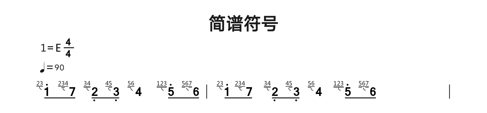
18. Dynamics and hairpins
Attach an ampersand code to a note, such as 3&mp. The reference terms are pp, p, mp, mf, f, ff, fff, cresc, dim, sf, fp, sfp, a tempo and rit. Use &a tempo for the two-word term. Hairpins start with < (crescendo) or > (decrescendo) and end with !. Add + after the opening marker to move it upward when it overlaps another span. These are printed instructions; the desktop app does not interpret them as audio playback controls.
Q: 1&p< 2 3 4! | 5>+ 4 3 2! | 1&a tempo - - - ||| Code | Instruction |
|---|---|
&pp | Very soft |
&p | Soft |
&mp | Moderately soft |
&mf | Moderately loud |
&f | Loud |
&ff | Very loud |
&fff | Extremely loud |
&cresc | Crescendo |
&dim | Diminuendo |
&sf | Sudden accent |
&fp | Loud then immediately soft |
&sfp | Accented then immediately soft |
&a tempo | Return to original tempo |
&rit | Gradually slower |
Start, end and height of a hairpin
Place < or > on the starting host and ! on the ending host. A lone opening marker has no dependable endpoint; close it deliberately before the page boundary. <+ or >++ raises that span above the default height, with more + requesting a greater adjustment. Use the smallest offset that avoids a slur/ending collision, then inspect nearby systems and exports. Page spacing controls move whole rows; a + offset moves the selected mark. These are different corrections.
Dynamics are printed instructions
Attach &mp, &mf, &f and the other table entries to the note where the instruction begins. Keep multiword &a tempo intact. Printed pp through fff describe loudness; cresc/dim describe change; rit and a tempo describe speed. An &yc fermata is an ornament, not a loudness instruction, although it uses the same ampersand mechanism. Printed tempo/dynamics do not provide playback or MIDI output.
Dynamics and raised hairpins in a choir
Q1 and Q3 start with &mp. <+ begins a raised crescendo, ! ends it, then > begins a decrescendo. Compare the span endpoints with the notes and rests in the other parts; lyric rows remain attached to their source system.
Samples Library: Edelweiss - Choir ChinEng.jps · source lines 11-18. Excerpt rendered with Free Fallback fonts; blank page space omitted. Download this JPS excerpt
JPS source
Q1: 3&mp -<+ 5 | 2' - -! | 1'> - 5 | 4 - -! | 3 - 3 | 3 8 4 8 5 | {dsb 6 - - | 5 - - | } 4 - - | 4 - - |
C1: 雪绒花，雪绒花，清晨迎@着@我开放，
C2: E-/ del-/ weiss~, E-/ del-/ weiss~, ev-/ '~r~y morn-/ @ing/ @you/ greet/ me~.
Q2: 3 - 3 | 5 - - | 5 - 5 | 4 - - | 3 - 3 | 3 8 1 8 1 | 1 - - | 2 - - |
Q3: 5&mp -<+ 5 | 5 - -! | 1'> - 1' | 6 - -! | 1' - 1' | 1' 8 6 8 6 | 6 - - | 7 - - |
C3: 雪绒花，雪绒花，清晨迎@着@我开放，
C4: E-/ del-/ weiss~, E-/ del-/ weiss~, ev-/ '~r~y morn-/ @ing/ @you/ greet/ me~.
Q4: 1 - 1 | 7, - - | 3 - 3 | 4 - - | 5 - 5 | 5 8 4 8 3 | 2 - - | 5 - - |
19. Ornaments, parentheses and annotations
| Code after a note | Meaning |
|---|---|
| &yc | Fermata / 延长记号 |
| &bc | Tenuto / 保持音 |
| &zy | Accent / 重音 |
| &dy | Staccato / 顿音 |
| &hx | Breath / 呼吸 |
| ­ / &xhy | Upward / downward slide / 上、下滑音 |
| &sby / &xby | Upper / lower mordent / 上、下波音 |
| &cy | Trill / 颤音 |
| &sby+ / &xby+ / &cy+ | Variant ornament forms / 装饰变体 |
| &zkh / &ykh | Left / right accompaniment parenthesis / 伴奏左右括弧 |
These short codes come from the notation reference, often from Chinese name initials. Attach them to the correct note. The + suffix selects the illustrated alternative for mordents/trills. Add a quoted annotation after a note to print text above it. Accompaniment parentheses &zkh and &ykh are also placed after the host digit even when the drawn parenthesis appears before the music.
Q: 3&yc 3&bc 3&zy 3&dy | 3&hx 3­ 3&xhy 3&cy |
Q: 1&zkh 2 3 4&ykh | 5"sing gently" - - - ||Use the correct attachment and variant
&yc holds a note, &bc marks tenuto, &zy marks an accent and &dy a detached/staccato note. &hx is a breath indication. ­/&xhy are slides; &sby/&xby are upper/lower mordents; &cy is a trill. The + forms in the table select alternate ornament shapes: this + is not interchangeable with a hairpin-height offset. Multiple compatible codes can be attached to one host, as in 6/&sby&zkh. Check the rendered result for crowding.
Three kinds of text and parentheses
A quoted annotation after a note, such as 5"sing gently", prints near that host; a quoted barline annotation belongs to the boundary; a full # comment never prints. For accompaniment parentheses use &zkh and &ykh after the first and last host. Ordinary (...) in Q makes a musical slur, not a pair of accompaniment glyphs. Ordinary punctuation and the legacy (~...~) form in C belong to lyric text, not music-span syntax.
Ritardando and fermata
5&rit prints the tempo instruction. 7,/&yc prints a fermata above the low eighth note. Neither command changes playback, because OctoPus currently has no playback workflow.
Samples Library: Farewell.jps · source lines 34-36. Excerpt rendered with Free Fallback fonts; blank page space omitted. Download this JPS excerpt
JPS source
Q: 5 (3/ 5/) 1'. 7/ | 6 1' 5 - | 5&rit (2/ 3/) 4. 7,/&yc | 1 - - 0 ||
C: 人生@难得是欢聚，唯有@别离多。
C: (~问君@此去几时还，来时@莫徘徊~)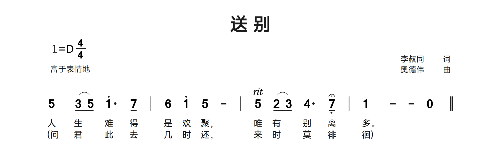
Tenuto and accompaniment parentheses
The final bar attaches &bc to each note. &zkh is attached to its first note and &ykh to its last, creating visible accompaniment parentheses without adding musical events.
Samples Library: China-In-The-Lights.jps · source lines 21-21. Excerpt rendered with Free Fallback fonts; blank page space omitted. Download this JPS excerpt
JPS source
Q: 8 2 (2/ 3/) (4/ 3/) 2/ 1/ | 1/. (1// 1/) 6/ 6 - | 1/ 7,/ 7,/ 1/ 2/ 1/ 2/ (3/ | 3/) (1/ 1) - - | 2&bc&zkh 3&bc 4&bc 5&bc&ykh |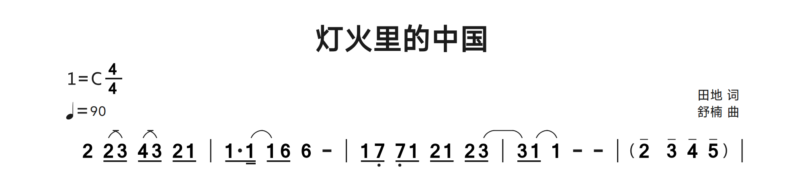
20. Barlines and repeat instructions
| Syntax | Appearance/use |
|---|---|
| | | Single / 普通小节线 |
| || | Thin-left/thick-right final line / 左细右粗终止线 |
| ||/ | Two thin lines / 双细线 |
| |: | Start repeat / 左反复 |
| :| | End repeat / 右反复 |
| :|: | End/start repeat / 两侧反复 |
| |/ | Hidden, no layout width / 不显示、不占位 |
| |* | Hidden, reserves layout width / 不显示、占位 |
| Barline-attached code | Meaning |
|---|---|
| ||&fine | Fine / 终止 |
| ||&dc | D.C. / 从头反复 |
| ||&ds | D.S. / 从记号反复 |
| |&ty | Segno / 大跳记号 |
| |&hs | Coda / 花记号 |
Repeat/navigation marks belong to a barline, not an ordinary note. Use |/ at a row beginning when a barline-attached mark is needed without a visible barline. Use |* to reserve alignment space, especially with mixed single/multiple voices. These marks are printed; playback navigation is not provided.
Visible and invisible boundaries
Use | for an ordinary boundary, || for the final thin/thick boundary and ||/ for two thin lines. |:, :| and :|: mark repeat starts, ends and combined end/start boundaries. A barline divides music; it does not insert a rest. |/ is invisible and takes no barline width, useful at a row-start ending or navigation mark. |* is invisible but reserves width, useful for aligning a later voice entry. These two hidden forms are not interchangeable.
Fine, D.C., D.S., segno and coda
Attach &fine, &dc and &ds to a barline to print Fine, D.C. or D.S.; &ty draws the segno and &hs the coda sign. For a row-start sign, create a hidden |/ anchor rather than attaching the code to an unrelated note. A repeat ending label such as "1,2" is separate from a navigation command. The viewer displays these symbols but does not execute a playback route. Check that the written route is musically complete yourself.
A repeat beginning inside a source row
The |: occurs after two bars. A repeat boundary is part of the musical flow, not a request for a new source row. The lyric skip markers align unsung notes before the chorus.
Samples Library: JingleBells.jps · source lines 18-20. Excerpt rendered with Free Fallback fonts; blank page space omitted. Download this JPS excerpt
JPS source
Q: 6,/ 4/ 3/~ 8~ 2/ 5/~ 8~ 5/ 5/~ 8~ 5/ | 6/ 5/ 4/~ 8~ 2/ 1. 0/ |: 3/ 3/ 3 3/ 3/ 3 |
C: fun /it /is @/to /ride @/and /sing @/a /sleigh- /ing /song @/to- /night~. @Jin- /gle /bells~, jin- /gle /bells~,
C: 今晚滑@雪真@快乐@把滑雪歌@儿唱。@叮叮当，叮叮当，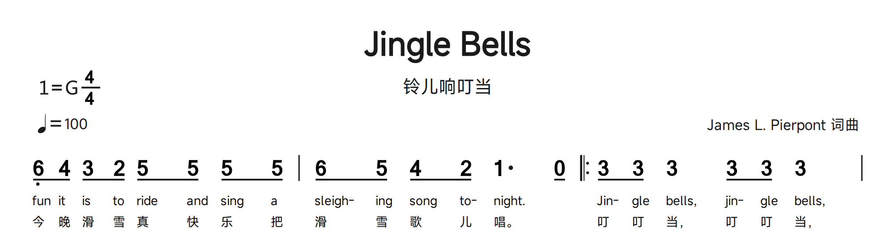
21. Slurs and tuplets
Wrap music in parentheses for a slur: (1 2 3). Spans can nest and continue across barlines or music rows on the same page. Open the span in the earlier Q row and close it in the later row of the same voice. Use (y1 2 3) for a tuplet; the group count is inferred from its notes. Do not use a capital Y. Cross-page slurs are not automatically continuous: split/reopen spans at manual page boundaries and inspect the result.
Q: (1 (2 3) 4 | 5 6
Q: 7 1') | (y1/ 2/ 3/) 4 5 6 ||Nested, cross-bar and cross-row spans
Open ( on the first included note and close ) on the last. Nested pairs form separate spans; keep a count while editing. A barline inside the pair does not end the slur. On the same page, leave it open at the end of a Q row and close it on a later row of that voice. If a lyric line intervenes, it remains a lyric, not a slur terminator. At a manual page break, split/reopen the span deliberately. Ending branches also need intentional span boundaries; do not place a close on an unrelated voice merely to silence a warning.
A slur is not a tuplet
(1/ 2/ 3/) is an ordinary three-note slur; (y1/ 2/ 3/) is a tuplet. The renderer infers the count from the group, so changing its notes changes the printed number. Do not type a guessed number after y as though it were a ratio field. Keep the group limited to the intended notes and compare its bracket/number with the reference. A printed tuplet is not proof that every surrounding bar has been rhythmically validated.
A slur crossing a barline
In the second row, (3 - | 3) opens before a continuation and closes in the next bar. The same note number at both endpoints is not enough: the parentheses define the printed span.
Samples Library: As-Wished.jps · source lines 11-12. Excerpt rendered with Free Fallback fonts; blank page space omitted. Download this JPS excerpt
JPS source
Q: 3&zkh 6,// 1// 3// 5// 4/ 3/ 2/ 1/ | 7,/ 1/ 2/ 7,/ 3 7 | 1 6,// 1// 3// 5// 4/ 3/ 2/ 1/ | 7, - 0/ 3,/ 6,/ 7,/ |
Q: 1. 3// 5// 4 - | 0/ 7,/ 1/ 2/ (3 - | 3) 0 0 3/ 1'/ |"p:2/4" 7 5# |"p:4/4" 6 - -&ykh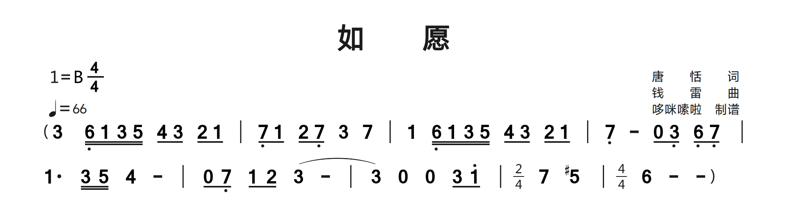
Ordinary slurs beside triplet groups
(5// 5) is an ordinary slur; (y1/ 2/ 3/) creates a numbered three-note tuplet. The y is lowercase and comes immediately after the opening parenthesis.
Samples Library: Flower-In-Water.jps · source lines 12-13. Excerpt rendered with Free Fallback fonts; blank page space omitted. Download this JPS excerpt
JPS source
Q: 1'/ 5/ 6/ 3// (5// 5) (y1/ 2/ 3/) | 2. 3/ 6, (y1/ 2/ 3/) | 2. 3/ 6, 0/ 6,/ | 5,/ 3/ 3 - 0 |
C: 凄雨冷风中 @多少繁华如梦 曾经万紫千红 @随风吹落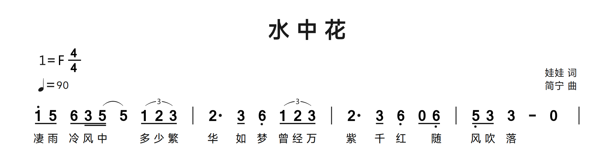
22. Endings and temporary meter
Ending brackets [ and ] are attached to barlines. Put their label in a quoted barline annotation. A start at the beginning of a row uses hidden |/. Add / after [ for an open right edge; add + (or several +) to raise the bracket and avoid overlapping slurs. Ending spans may cross rows; keep their endpoints in the correct voice. The same brackets attached to a note mean grace notes, so placement matters.
Q: |/["1" 1 2 3 4 :|] |/["2" 5 6 7 1' ||]
Q: |/[+/"1,2" 1 2 3 4 | 5 6 7 1' |]For a meter change, put "p:3/4" after the barline. This prints the local time signature and updates automatic grouping for the following notes in that voice. Changing to 6/8, 9/8 or 12/8 selects dotted-quarter groups; changing to 3/4 or 4/4 restores quarter-note groups. Use ~ or ^ for any intentional override.
Q: 1 2 3 4 |"p:3/4" 5 6 7 |Place each ending on barlines
An ending opens with [ attached to a barline and closes with ] attached to a later barline. The quoted label belongs to the barline, not to a note. For a beginning at the left of a music row, use |/["1". Use [+, [++ and further + to raise the line above nearby slurs. An open-edge form can use / on the bracket syntax; library scores also use a closing |]/ to omit the right corner. Copy a complete opening/closing pair and inspect it rather than moving brackets alone.
Cross-row endings and local meter
An ending may continue into the next music row on the same page. Keep its label, endpoint, repeat barline and lyric ending consistent. For a local meter, write |"p:3/4" with lowercase p inside the quotes. A row-start local change can use |/"p:3/4". Header P: 3/4 sets the initial meter; if it lists several meters, the first is used until a local change. Within a page, later rows of the same voice retain their local meter. In compound meter, the grouping phase also continues across rows. Other voices retain their own meter, and underline segments end at each row boundary. To return to an earlier meter, write it explicitly, for example |"p:4/4". Reintroduce a local meter after a manual page break when needed. Review durations and custom grouping at every change; a meter annotation does not redistribute the source notes.
First and second endings on one row
The first ["1" begins on a barline and ends at :|]; ["2" follows on that same boundary and finishes at ||]. Compare the two branches with the matching lyric endings.
Samples Library: JingleBells.jps · source lines 22-24. Excerpt rendered with Free Fallback fonts; blank page space omitted. Download this JPS excerpt
JPS source
Q: 3/ 5/ 1/. 2// 3 - | 4/~ 8~ 4/ 4./~ 4// 4/~ 8~ 3/ 3/~ 3//~ 3// |["1" 3/ 2/ 2/~ 8~ 1/ (2/ 5.) :|]["2" 5/ 5/ 4/~ 8~ 2/ 1. ||]
C: Jin- /gle /all /the /way~. Oh @/what /fun /it /is @/to /ride~, in /a /one- /horse /o- @/pen /sleigh~! one- /horse /o- @/pen /sleigh~!
C: 铃儿响叮当，我@们滑雪多@快乐，我们坐在雪@橇上。坐在雪@橇上。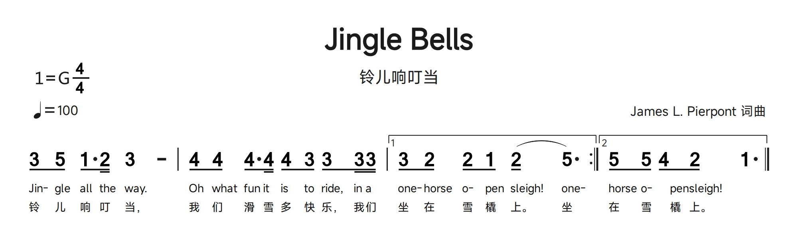
Raised ending, row-start anchor and open right edge
|/ provides an invisible row-start anchor; [+ raises the bracket. The closing |]/ leaves an open right edge. The local "p:2/4" changes the printed meter during the passage.
Samples Library: As-Wished.jps · source lines 32-32. Excerpt rendered with Free Fallback fonts; blank page space omitted. Extra top clearance separates the isolated ending from the header. Download this JPS excerpt
JPS source
Q: |/[+"2" 6/ 7/ 1'/ 2'/ 2'/ 3'// (3'// 3'/.) 3'// | 3'/ 2'// (4'// 4'/) 3'/ 2'/ 1'// (1'// 1'/.) 1'// |"p:2/4" 7/ 1'// (2'// 2'/) 7/ |]/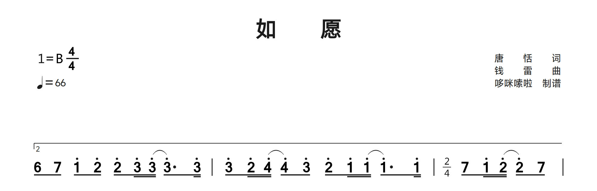
23. Voices and temporary accompaniment
Use Q1, Q2, etc. for numbered music parts; C/C1/C2 rows supply the associated lyric lines. Preserve their ordering and inspect the preview when adapting library scores. A voice name can follow its number in quotes. Keep successive voices rhythmically aligned; numbered music rows form a system, while lyrics attach to their matching voice. Single and multiple voices can be mixed. A mid-row voice brace is indicated by &sbf; use hidden rest 8 and hidden barline |* to reserve earlier space in secondary voices.
Q1"Soprano": 1 2 3 4 |
C1: 春 风 吹 来
Q2"Alto": 3, 4, 5, 6, |
C2: 花 儿 开 了Temporary accompaniment uses {bz ...}; temporary multiple voices use {dsb ...}. The keyword must immediately follow { and be lowercase. These inline groups are positioned against the main music. Copy an appropriate bundled example and check duration/alignment instead of assuming arbitrary blocks will align automatically.
A temporary accompaniment block may contain several measures and more notes than its host melody; its notes, visible rests and later measures are retained. In a score with multiple voices, the host melody keeps its shared duration grid with the other parts; the accompaniment does not add beats to that melody. A block at a row end can align with the following row of the same voice. When no following melody is available, including a standalone or terminal block, its contents are still displayed. Nested {bz ...} notes render once. Review alignment whenever the rhythms or measure counts differ.
Q: 3 4 | {bz 1&zkh 2 3 4 | 5 6 7 1'&ykh} 5 6 7 1' |
Q: 3 4 | {dsb 1 2 3 4 | 5 6 7 1'} 5 6 7 1' |A minimal mid-row brace pattern (inspect alignment in the preview):
Q1: 1 2 3 4 |&sbf 5 6 7 1' |
Q2: 8 8 8 8 |* 3 4 5 6 |Build a system one part at a time
Use Q1, Q2, Q3 and Q4 for simultaneous parts, not four successive solo rows. A quoted name follows the number before the colon, for example Q1"Soprano":. Enter one system, compare bar boundaries and durations across its parts, then add its lyric rows and the next system. A missing rest cannot be repaired by visually adding spaces. Library scores include unnumbered C and numbered lyric lanes; their placement is context-sensitive. Preserve a working sample's row ordering and confirm the result when assigning new lyrics.
Temporary blocks and a mid-row brace
{bz ...} is a temporary accompaniment block; {dsb ...} is temporary multiple-voice content. The lowercase keyword follows { immediately. These attach inline to the main passage, while top-level Q2 starts another full part. Count both brace endpoints and the slurs within the block. For a mid-row voice entry, &sbf marks the brace position in the first voice; secondary voices use duration-compatible hidden 8 events and |* boundaries before the entry. This technique is in the reference but no bundled example uses &sbf, so the minimal pattern above is a constructed exercise, not a library quotation.
Temporary accompaniment above the melody
The {bz ...} group is embedded inside the second bar, while the main slur closes on the following 6. A raised second-ending bracket spans the passage. Read brace, bracket and parenthesis pairs separately.
Samples Library: Azalea.jps · source lines 29-30. Excerpt rendered with Free Fallback fonts; blank page space omitted. Download this JPS excerpt
JPS source
Q: |/[+++"2" (6/ 2'/) (2'/ 1'// 6//) | (6[5] - | {bz 6/&zkh 2'/ 2'/ 3'/ | } 6) - | 3'/ 2'/ 3' | 2' - | 3' - | 3' - 8&ykh ||]
C: 映@山@@红。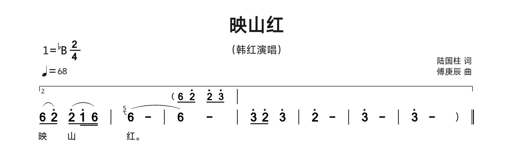
Temporary multiple voices within a full choir system
Q1 contains {dsb 6 - - | 5 - - | } while its main sequence continues with 4. Compare this inline branch with the ordinary Q2/Q3/Q4 parts. A brace group is not a new top-level Q row.
Samples Library: Edelweiss - Choir ChinEng.jps · source lines 11-18. Excerpt rendered with Free Fallback fonts; blank page space omitted. Download this JPS excerpt
JPS source
Q1: 3&mp -<+ 5 | 2' - -! | 1'> - 5 | 4 - -! | 3 - 3 | 3 8 4 8 5 | {dsb 6 - - | 5 - - | } 4 - - | 4 - - |
C1: 雪绒花，雪绒花，清晨迎@着@我开放，
C2: E-/ del-/ weiss~, E-/ del-/ weiss~, ev-/ '~r~y morn-/ @ing/ @you/ greet/ me~.
Q2: 3 - 3 | 5 - - | 5 - 5 | 4 - - | 3 - 3 | 3 8 1 8 1 | 1 - - | 2 - - |
Q3: 5&mp -<+ 5 | 5 - -! | 1'> - 1' | 6 - -! | 1' - 1' | 1' 8 6 8 6 | 6 - - | 7 - - |
C3: 雪绒花，雪绒花，清晨迎@着@我开放，
C4: E-/ del-/ weiss~, E-/ del-/ weiss~, ev-/ '~r~y morn-/ @ing/ @you/ greet/ me~.
Q4: 1 - 1 | 7, - - | 3 - 3 | 4 - - | 5 - 5 | 5 8 4 8 3 | 2 - - | 5 - - |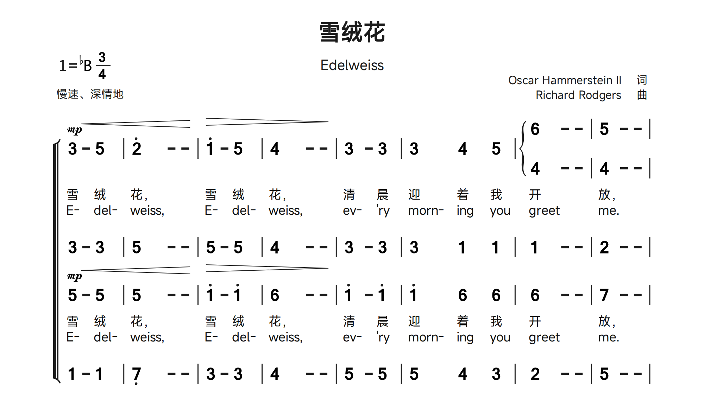
Four aligned parts and reserved blank slots
Q1 through Q4 form one system. Compare the simultaneous barlines and the inserted 8 slots. Numbered C rows in library files can also denote successive lyric lanes: inspect their actual preview rather than mechanically renumbering a borrowed score.
Samples Library: O-Canada Choir.jps · source lines 13-17. Excerpt rendered with Free Fallback fonts; blank page space omitted. Download this JPS excerpt
JPS source
Q1: 3 - 5. 5/ | 1 - - 2 | 3 8 4 8 5 6 | 2 - - 0 | 3 - 4#. 4/ | 5 - - 6 |
Q2: 1 - 7,. 7,/ | 6, - - 7, | 1 8 1 8 1 1 | 1 - 7, 0 | 1 - 2. 2/ | 2 - - 3 |
C: O /Can- /a- /da~! Our/ home / @and /@na-tive/ land~! @@True /pa-triot /love/ in
Q3: 5 - 4. 4/ | 3 - - 5 | 5 8 5 8 5 4 | 5 - - 0 | 5 - 1'. 1'/ | 7 - - 6 |
Q4: 1 - 5,. 5,/ | 6, - - 5, | 1 8 2 8 3 4 | 5 - - 0 | 1 - 6,. 6,/ | 7, - - 1 |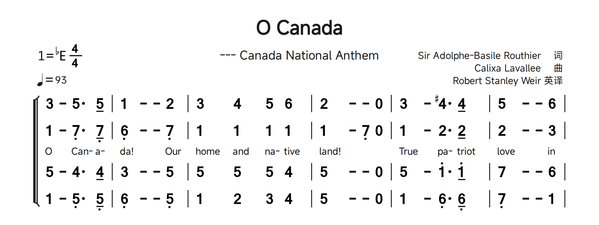
24. Lyrics: Chinese, English and mixed text
A C line belongs to the preceding music row; use matching voice numbers for multipart scores. Chinese characters ordinarily map one per note. Punctuation is recognized without becoming a separate sung syllable. @ skips a note; extension - strokes do not each need @. Join two Chinese characters with ~ to fit one note. Several C lines after one Q row supply separate verses.
Q: 1 2 3 4 | 5 - 6 7 |
C: 春 风 @ 来 花~儿 开 了
C: 第 二 段 词 也 能 写Begin a lyric line with a quoted label such as "1.". Use underscore _ for a space inside that legacy lyric-label notation. English words/syllables are separated by /; do not map individual letters to notes. / can also make mixed Chinese/English boundaries explicit. Use @ for unsung notes and inspect melismas rather than treating ordinary spaces as dependable English syllable delimiters.
Q: 1 2 3 4 |
C: "Verse_1" Sing/a/new/song
C: "2." 春/风/@/songCount sung slots, not visible characters
A Chinese character usually fills one sung slot; punctuation does not require its own note. @ advances past an unsung note, while ~ joins adjacent lyric characters into one slot. A continuation dash does not require another @. When a melody has two notes under one syllable, put the syllable on the first and skip the next as required by the source pattern. Check hidden 8 events and rests as well: they can affect alignment even though a digit is not visible. Add one verse first, then duplicate the C row and replace its words.
Verse labels, spaces and lyric parentheses
Quoted labels precede the lyric they describe, such as C: "1." ... or a label following initial @ skips. In the legacy label convention, use _ for an ordinary space: "Verse_1". Do not confuse these quotes with a note annotation in Q. Some library scores enclose an alternate lyric with (~...~); retain the delimiters when borrowing that pattern and inspect the printed punctuation. Ordinary prose spaces are for readability, not a dependable way of mapping each sung syllable.
English syllables and mixed languages
Use / between sung words or syllables. Split a polysyllabic word deliberately, for example Can-/a-/da, while retaining a visible hyphen where required. A hyphen in C is lyric text, not a musical continuation. @ skips an unsung slot and Chinese/English boundaries may be made explicit with /. The reference allows some separators to be omitted beside Chinese/@, but explicit separators are clearer when editing. Library scores also use ~ within English syllable grouping; inspect the complete pattern before simplifying it.
Chinese verses, skipped notes and a lyric enclosure
Both sung verses follow the same Q row. @ skips the second note of a slurred group. The third C row uses the legacy (~...~) lyric enclosure; this is lyric text/grouping, not a music slur.
Samples Library: Farewell.jps · source lines 17-20. Excerpt rendered with Free Fallback fonts; blank page space omitted. Download this JPS excerpt
JPS source
Q: 5 (3/ 5/) 1'. 7/ | 6 1' 5 - | 5 (2/ 3/) 4. 7,/ | 1 - - - |
C: 晚风@拂柳笛声残，夕阳@山外山。
C: 问君@此去几时还，来时@莫徘徊。
C: (~人生@难得是欢聚，唯有@别离多~)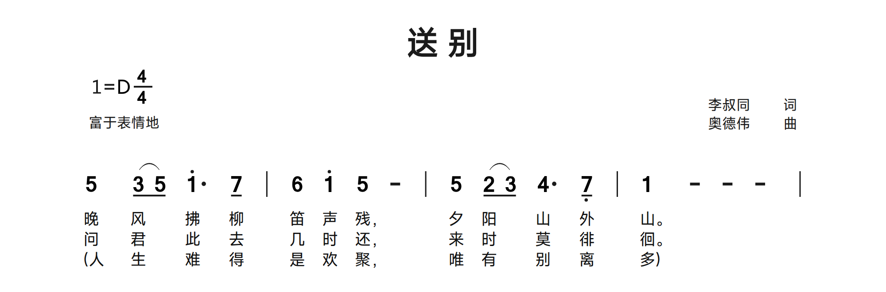
Chinese joins and bilingual lyric rows
The Chinese text joins 马~儿 and 令~人 so each pair belongs to one lyric slot. The English line uses / to separate words/syllables and @ for unsung notes. Compare both under the same melody.
Samples Library: JingleBells.jps · source lines 14-16. Excerpt rendered with Free Fallback fonts; blank page space omitted. Download this JPS excerpt
JPS source
Q: 5/ 5/ 4/ 2/ (3 1/) 5,/ | 5,/ 3/ 2/ 1/ 5,. 5,/ | 5,/ 3/ 2/ 1/ 6,. 6,/ |
C: laugh- /ing /all /the /way~. @@Bells /on /bob- /tail /ring~, @mak- /ing /spir- /its / bright~. What
C: 欢笑又歌唱。@马~儿铃声响叮当，令~人精神多欢畅，我~们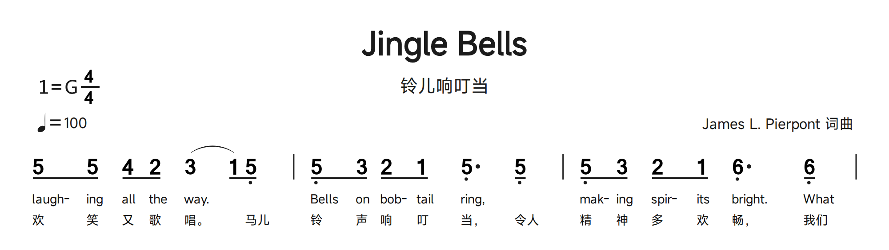
English and French syllable alignment
Can- /a- /da gives three sung slots. A hyphen in a lyric is visible text, not a duration extension. Both C rows share the melody; the long final syllable does not require a new lyric entry for every continuation stroke.
Samples Library: O-Canada.jps · source lines 13-15. Excerpt rendered with Free Fallback fonts; blank page space omitted. Download this JPS excerpt
JPS source
Q: 3 - 5. 5/ | 1 - - 2 | 3 4 5 6 | 2 - - 0 |
C: O /Can- /a- /da~! Our/ home / and /na-tive/ land~!
C: Ô Can- /a- /da~! Ter- /re /de /nos /ai- /eus~,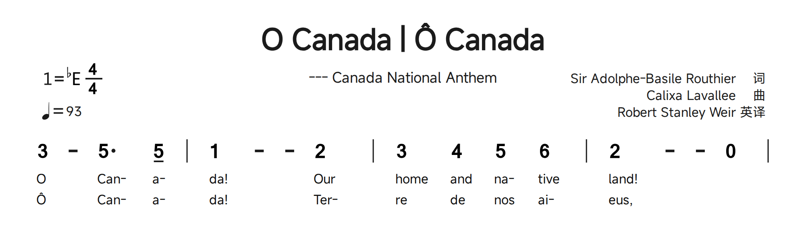
Quoted verse labels after an initial skip
The pickup rest is skipped with @; then "1. " and "2. " label the verses. The library uses a full-width space in those labels. For a portable ASCII-space label, use the documented underscore convention.
Samples Library: As-Wished.jps · source lines 14-16. Excerpt rendered with Free Fallback fonts; blank page space omitted. Download this JPS excerpt
JPS source
Q: 0/. 6,// |: 3 1// 2// 3// (4// 4.) 4// 3// | 2/ 1// (2// 2/) 7,/ 3 - | 0 1/ 3/ 2/ 1// (2// 2/.) 1// | 2/ 1// (2// 2/) 7,/ 3. 0// 6,// |
C: @"1. "你是 遥遥的路 @山野大雾里@的灯 @我是孩童啊 @走在你的@眼眸 @你是 明月清风 @我是
C: @"2. "@是 岁月长河 @星火燃起的@天空 @我是仰望者 @就把你唱@成歌 @你是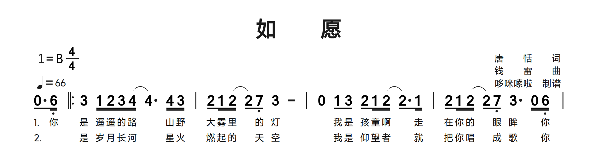
25. Manual page breaks
Place the exact lowercase token [fenye] on its own line. It creates a new score page; it is not a note annotation. Keep the intended music systems and their lyrics together. Long source does not imply automatic musical reflow or automatic page-spanning slurs. Split/reopen slurs at the page boundary, inspect ending brackets and confirm that each exported page fits its margins.
Q: 1 2 3 4 ||
C: 第 一 页 词
[fenye]
Q: 5 6 7 1' ||
C: 第 二 页 词Choose a boundary after a complete system
Put [fenye] on its own line between complete systems. In a multipart score, include every Q part and associated C row before breaking. Close or intentionally split slurs and inspect ending/hairpin endpoints at the boundary. After adding a page, navigate both pages and review their lower margins. The source controls music-row and page boundaries; changing paper or font settings does not replace explicit musical pagination. The example below has two rendered page crops, not a single tall page.
Two systems separated by a manual page break
The first system ends before [fenye]; the next starts with a complete Q1-Q4 system. Both output pages are shown. Keep each system and its lyric rows together when choosing a boundary.
Samples Library: Edelweiss - Choir ChinEng.jps · source lines 29-47. Excerpt rendered with Free Fallback fonts; blank page space omitted. Download this JPS excerpt
JPS source
Q1: 2'&mf 0/ 5/ 8 5 | 7 8 6 8 5 | 3 - 8 5 | 1' - - | 6 - 8 1' | 2' - 8 1' | 7> - - | 5 - -! |
C1: 白@雪@般~的花@儿@愿你@芬芳，永@远开@花生长。
C2: Blos-/ @ som/ @ of/ snow~, @may/ @you/ bloom/ @and/ grow~, bloom/ @and/ grow/ @for-/ ev-/ er.
Q2: 5 0/ 4/ 8 4 | 4 8 4 8 4 | 3 - 8 3 | 3 - - | 4 - 8 6 | 6 - 8 6 | 5 - - | 5 - - |
Q3: 2' 0/ 2'/ 8 2' | 2' 8 2' 8 2' | 1' - 8 1' | 1' - - | 1' - 8 1' | 2' - 8 2' | 2'> - - | 7 - -! |
C3: 白@雪@般~的花@儿@愿你@芬芳，永@远开@花生长。
C4: Blos-/ @ som/ @ of/ snow~, @may/ @you/ bloom/ @and/ grow~, bloom/ @and/ grow/ @for-/ ev-/ er.
Q4: 7 0/ 7/ 8 7 | 5 8 6 8 7 | (1' 7) 8 6 | 5 - - | 4 - 8 4 | 4# - 8 4 | 5 - - | 4 - - |
[fenye]
Q1: 3<+ - 5 | 2' - -! | 1'> - 5 | 4 - -! | 3 - 8 5 | 5 8 6 8 7 | 1'< - - | 1'# - -! |
C1: 雪绒花，雪绒花，永@远祝@福@我家乡。
C2: E-/ del- /weiss~, E-/ del-/ weiss~, bless/ @my/ home-/ @land/ @for-/ ev-/ er~.
Q2: 3 - 3 | 5 - - | 4 - 3 | 4 - - | 3 - 8 3 | 4 8 4 8 4 | 3 - - | 5 - - |
Q3: (3' 2')< 1' | 2' - -! | 1'>++ - 1' | 1' - -! | 1' - 8 1' | 7 8 7 8 2' | 1'<+ - - | 3' - -! |
C3: 雪@绒花，雪绒花，永@远祝@福@我家乡。
C4: E-/ @del- /weiss~, E-/ del-/ weiss~, bless/ @my/ home-/ @land/ @for-/ ev-/ er~.
Q4: 5 - (5/ 6/) | 7$ - - | 6 - 6 | 6$ - - | 5 - 8 5 | 5 8 5 8 5 | 5 - - | 6 - - |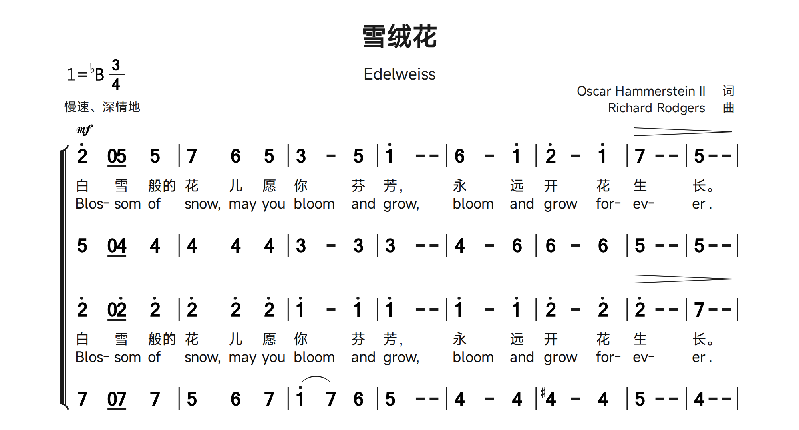
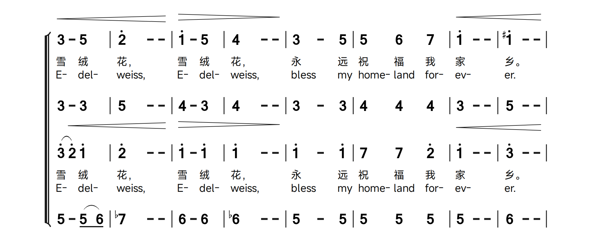
26. Practical editing and review checklist
- Choose a bundled sample close to the score: ordinary melody, symbols/grace notes, multiple voices or lyrics. Work on a copy.
- Enter header fields first, then one music row. Check barlines and durations before adding lyrics.
- Attach octave, duration, accidental and ornament suffixes to the intended note. Distinguish note grace brackets from barline ending brackets.
- Add voices and lyric verses one at a time; check alignment after each change.
- Use ~ /^, bracket-height + and page settings deliberately to fix grouping/overlap. They do not repair wrong pitches.
- Compare each transcribed page with its original, including page transitions and annotations.
- Resolve diagnostics, save the editable master, export and inspect the final files.
Use the illustrations as editing exercises
Each illustrated block pairs exact selected source lines with a fresh OctoPus render. The header is included in the download; display crops remove unused page whitespace only. Open the named sample to see its full musical context, or open the excerpt to isolate the syntax. Change one token at a time, compare preview and export, then Undo. A successful render demonstrates notation/layout, not verified transcription or complete harmonic/rhythmic correctness.
27. Troubleshooting and feedback
| Symptom | What to check |
|---|---|
| Unexpected symbols or warnings | ASCII punctuation, colon after the row prefix, balanced quotes/brackets, correct suffix attachment and lowercase keywords. |
| Lyrics shifted | C/Q voice pairing, @ for skipped notes, ~ for grouped Chinese text, / between English syllables. |
| Slur/ending overlaps | Correct endpoints, page boundary, manual + offsets and available vertical spacing. |
| Import fails | Supported file type, one input at a time, 100 MiB/200-page limits, readable unencrypted file and no active conflicting operation. |
| Transcription unavailable/fails | Packaged OCR worker, original input quality and Poppler availability for PDF processing. |
| Different font appearance | Actual installed OS family, bundled fallback, missing-glyph backup and external SVG viewer fonts. |
| Browser or update failure | Default-browser association and network; unavailable release information is not proof of being up to date. |
For a reproducible issue, share the app version, OS, minimal JPS, relevant settings, steps and expected/actual result. Include original/reference images only when appropriate. Use Report Issues; proposed changes use the pull-request page. The historical specification’s old personal contact details are not the OctoPus support route.
28. Reference basis and compatibility
This manual consolidates the locally retained Jianpu-Spec v1.0 chapters: introduction, descriptive header, music, lyrics and feedback. Image-only symbol/dynamic/barline tables were read and rewritten as searchable text tables. This edition adds detailed explanations and 25 attributed Sample Library excerpts with 26 rendered images; original reference screenshots are not redistributed. Minimal syntax drills remain where the library has no matching example. It also uses the captured Website-Contents/Zhipu-jsCode-editor for source formatting and source/preview-position conventions, checked against OctoPus behavior. The retained Zhipu-draw file is empty and contributes no additional instructions.
The notation syntax is inherited; the product/UI instructions and roadmap describe OctoPus. Historical claims about MIDI, playback, website auto-format settings or personal support contacts are not current desktop features. Runtime/parser, font policy, import limits and sample documents provide the current implementation cross-check. This is a rewritten usage guide, not a copy of the original scripts. References and authoring tools stay in OctoPus-dev; the production app ships this self-contained guide and its PDFs.